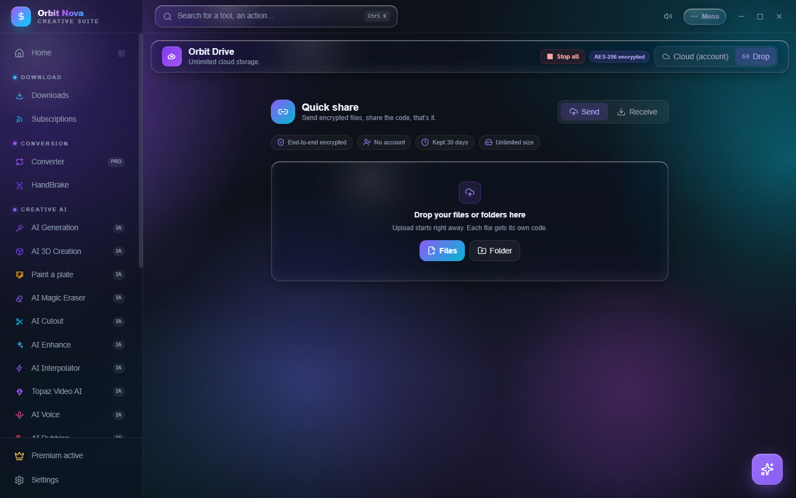

Orbit Drive
Orbit Drive is your online storage, end-to-end encrypted (AES-256): your files are encrypted on your PC before they leave, neither the Orbit server nor Discord can read them. It is also used to share files by link, sync folders from your PC and work together on the same folder. Everything in your Drive is also on orbit-drive.com.
The encrypted pieces are stored on Discord (or Telegram). These services are not made for this and an account can be deleted: always keep another copy of your important files.
The tab has three modes, top right: Cloud (account), Drop and Local (Local mode only shows up if you already use it).

Sign in
- Create account (e-mail and password) or Sign in. You can also sign in in one click with Google or Discord: sign-in opens in your browser then comes back to Orbit on its own.
- Choose an encryption passphrase. It protects your vault (your files' keys) and works on all your devices.
Each time you open it, type the passphrase to Unlock the Drive; Lock closes it.
- Forgot password? sends a code by e-mail. It changes the sign-in password, not the passphrase.
- Forgot your passphrase? creates a new one. Your personal files, impossible to decrypt without the old one, are deleted; folders shared with you come back on their own.
Nobody can recover your passphrase, not even Orbit. Write it down somewhere safe.
Organize your files
- Upload files, Upload a folder (with its subfolders) or drop them straight into the window. New folder and Refresh are in the same bar.
- Search by name, or type
#tagto find everything with a tag. - Sort and filter: by name, date, size or type, either way; show only folders, videos, images, audio, documents or archives. Grid or List view.
- Photos, videos and 3D models have a thumbnail, folders show a peek of their content, and creative files show their software's logo (Blender, After Effects, Photoshop…).
The menu of a file or folder
Right-click (or the Actions button) on an item:
| Action | What it does |
|---|---|
| Open / Play | Opens a folder, plays a video or sound, shows a photo or 3D model |
| Download | Saves the file (or the whole folder) to your PC |
| Share link | Creates a share link, see below |
| Share with people… | Invites other Orbit accounts into a folder |
| Sync to this PC… | Keeps this folder identical to a folder on your PC |
| Rename, Move to… | Changes the name or location |
| Copy to…, Duplicate | Instant copy: nothing is re-uploaded, and deleting the original does not touch the copy |
| Tags…, Color | Adds colour tags or colours a folder to spot it |
| Properties | Type, exact size, content, location, date, tags, encryption |
| Delete | Deletes the item (Del) |
Select several items to move, copy, tag or delete them at once.
View without downloading
Double-click a photo or a 3D model (GLB, FBX, OBJ, STL, PLY) to open it in the viewer, without saving
anything on your PC: ← → for the next file in the folder, Esc to close. For 3D models, textures are found
on their own in the model's folder. Videos play directly.
Transfers
Each upload or download can be paused and resumed, next to the Cancel button. Stop all, at the top of the Drive, cancels every running transfer and pauses syncs.
Share a link
Share link on a file or folder creates a link in one second (nothing is re-uploaded). Give the share a title, then choose:
- Who can open the link: Anyone with the link or Only me;
- What people can do: View and download, or View only (the person watches and plays videos but cannot save the files);
- a Password (optional): it never leaves your PC, give it separately;
- the Expiry: 1 day, 7 days, 30 days or Never.
Then Create the link: it is copied, with a QR code to scan or save. A folder link follows the folder: what you add, delete or rename in it shows up for people who already have the link.
Links open in any browser on orbit-drive.com, without installing Orbit; the preview shown in Discord or WhatsApp displays the file's name, size and type.
Drop: share without an account
Drop is Quick share: send encrypted files to someone, even without an account.


- Send: drop your files or folders, the upload starts right away and each file gets its own link. Copy link, QR code, Open in browser, or Copy all links. Unlimited size, files kept 30 days.
- Receive: paste an orbit-drive.com link or a share code. A protected link asks for its password.
- My shares: all your links, with their expiry. Disable the link cuts a link you already sent (files stay in your Drive).
- Shared folders: folders opened with a code (
orbf1_…); you can Download all, play them or Save to my Drive. With an account, this list follows you to your other PCs.
Sync a folder from your PC
Like Google Drive: a folder on your PC stays identical to a folder in the Drive, both ways. What you add, edit or delete goes up on its own, and other people's changes arrive in one to two seconds.
- In Cloud mode, open Sync with this PC then Sync a folder.
- Folder on your PC: Choose a folder…
- In the Drive: a new folder with the same name in My Drive, or the open folder.
- Sync.
The panel shows the status (up to date, files in progress, paused), the Recent activity, and the Sync now, Pause / Resume and Stop syncing buttons (files stay on your PC and in the Drive).
- Nothing is overwritten: if two people edit the same file at the same time, both versions are kept ("… (conflict - name date)").
- If many files disappear from your PC at once, Orbit asks for a confirmation: Delete from Drive, or No, put them back on my PC.
- With a synced folder, Orbit starts with Windows in the background (icon near the clock), catches up on what changed while it was closed, and uses very little memory. Quit asks for confirmation.
Folders shared with others
To work together on the same project (Blender, After Effects…):
- Right-click a folder › Share with people…, type the person's Orbit account e-mail.
- Tick Can edit (otherwise they are Read-only), then Invite.
- The person gets an e-mail. Access opens as soon as they open their Drive once (with their passphrase). Otherwise, send them the link with Copy invitation link.
They find the folder in Shared with me and can sync it on their PC. People with access… lists the members; Remove access, Stop sharing or Leave this folder at any time. Encryption stays end-to-end.
Store on Telegram or your own Discord
- Telegram: stores your new files (encrypted) in your Telegram account's Saved Messages. You need an
api_idand anapi_hash(on my.telegram.org › API development tools), then your number and the code you receive. The Telegram connection stays on your PC. - Local mode: the file list and the key stay on your PC, the pieces go to your own Discord channel through a webhook (Channel settings › Integrations › Webhooks › New webhook › Copy webhook URL). Several webhooks, one per line, make uploads faster.